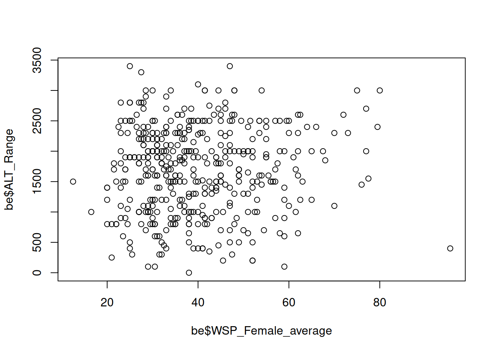
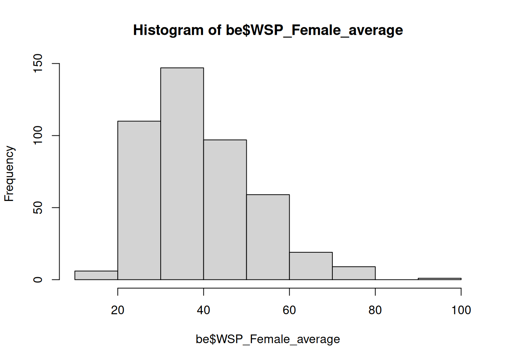

setwd("/home/of22haqi/Documents/TEACHING/MEE-WS25-26/data/")3 Data, packages, and some more functions
3.1 Setting up your working environment
Usually when working in R, you want to look at your own data, and not generate it from random distributions. To read in a data file, we first need to tell R where the working directory is located.
The path will look different on your machine of course.
Now that R knows where to find it, we are ready to read in a data file.
# The table contains headers, and the fields are separated by commas
be <- read.table("data/butterfly_ecology.csv", header = TRUE, sep = ",")
# Let's have a glimpse at the data
head(be)Use a text editor outside of Rstudio to look at the data file as well. Why do you think this is a good format to store data in? WHat is the advantage to e.g., an Excel file? What does using a text file format mean for your data entry requirements?
In order to save your entire working environment, so you don’t have to re-run potentially time intensive pieces of your code, just save it and load it back into your work space the next time you use R.
save.image("myenv.Rdata")You can also use the panel “Environment” in RStudio to save and load your data.
All of the functions we used today are so “base R” functions, which means they come preinstalled with R. Lots of the functionality of R is in external packages which need to be installed manually. The majority of relevant packages are found on CRAN (The Comprehensive R Archive Network), and there is a special archive for packages relevant to the life sciences (Bioconductor). In order to install packages from CRAN, simply run
install.packages("tidyverse", dependencies = TRUE)Here, tidyverse is the package we want to install we ask to also install any packages that tidyverse may require to function. You can find a list of all packages currently installed in the packages tab in the panel on the bottom left in RStudio. It is good practise to keep the packages, as well as your R installation up to date.
3.2 Functions
We have already used plenty of functions. Most of them require at least an object an which to perform the function on, and may also have some options. For example, consider the following function:
mean(be$range.size, na.rm = TRUE)[1] 261.4116mean is the function, be$range.size is the object (1 vector from the dataframe we just read into R) and na.rm = TRUE is the option to remove NAs from the vector before calculating the mean.
In some cases, you may want to do things to your data that cannot be addressed by a single function. In this case, you may have to perform a number of different operations on the dataset. If you are likely to use the same set of operations in the future, it may be advisable to use your own functions.
A very simple example. Let’s assume the mean function didn’t exist and we would need to write our own.
mean2 <- function(x){
x <- na.omit(x)
sum(x) / length(x)
}
mean2(be$range.size)[1] 261.4116We define mean2 as a function that requires an object (here called x as an input). Looking into the function, we can see that it first removes the NAs from the object and next calculates the sum of x divided by the number of elements of x (this is how the mean is defined). Testing it, we can see that it gives the same result as the native mean function.
3.3 Loops
In many cases, we need to apply a function t a number of elements. In this case, loops come in handy. In the simple examples below, the structure of a for loop is illustrated.
for(i in 1:10) # how often is the loop repeated
{
print(i) # what is to be done each iteration
}[1] 1
[1] 2
[1] 3
[1] 4
[1] 5
[1] 6
[1] 7
[1] 8
[1] 9
[1] 10j<-0
for(i in 1:5)
{
j<-i+j
print(j)
}[1] 1
[1] 3
[1] 6
[1] 10
[1] 15Observe and try to explain what happens in each iteration to the variables used in these examples.
3.4 Plots
For many use cases ggplot2 is the best approach of plotting, and we will get to know this package later. However, for very simple and quick plots, base R plotting functions are sufficient and superior to othe options because of simplicity and speed.
Scatter plots can be created by just naming the variables to be plotted against each other.
plot(be$WSP_Female_average, be$ALT_Range)
Histograms showing frequency distributions are also very easily generated
hist(be$WSP_Female_average)
Exercises
Using a loop, plot histograms for the columns “WSP_Female_average”, “Alt_Range”, “Alt_min”, and “range.size”.
Write a function that creates these plots with only the dataframe as argument.